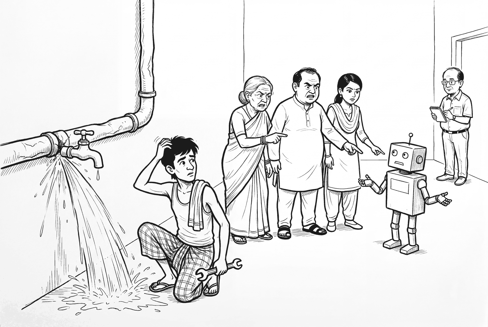

The Old Pipe and the New Tap
On Thursday, 12 November 2026, at 9:50 pm Indian time, Microsoft’s email service began to fail for people around the world. Over the next five days, the United States saw more breakdowns: air traffic control, a large bank, an airline and Apple’s online services.
Each of these is called an outage.
An outage is a time when a service that normally works stops working. It does not mean someone attacked it.
Then a line began to travel online: artificial intelligence is overloading the old internet. This post checks that line against what each organisation itself said.
What broke, and when
Think of each service as a shop and the internet as the road to it. Behind every shop is a back room full of computers called servers.
A server is a computer that keeps what the shop needs and hands it out all day to thousands of people at once.
Microsoft’s email service was disrupted for 23 hours and 50 minutes, from 9:50 pm on 12 November to 9:40 pm on 13 November, Indian time. Microsoft blames a hidden fault in its gateway servers.
A gateway server is the front gate of a service. Requests to read or send email pass through it first.
On 13 November, a problem at about 3:30 pm Eastern time led the Federal Aviation Administration (FAA) to stop planes taking off across the United States until about 8:15 pm.
The FAA is the United States body that runs air traffic control.
On 16 November, the bank Chase had trouble, and United Airlines delayed departures for about an hour and 40 minutes, the Associated Press reported. On 17 November, Apple’s sign-in and App Store faltered.
Apple told the news agency Bloomberg that an internal update caused its outage, not a cyberattack.
A cyberattack is an attack on computers by hackers.
Chase said a software bug was behind its trouble, and that it was not cyber-related. United gave no cause.

Where the AI line came from
The loudest version came from the United States Homeland Security Secretary, Markwayne Mullin. On Monday, 16 November, he told Fox News host Sean Hannity that an unnamed technology expert had said AI programs that write and fix their own code could cause a ripple effect in older systems. He said the idea “kind of makes sense” but gave no technical evidence, the news site Outlook India reported.
Two different claims are in the air. The first, Mullin’s: new AI programs are overwhelming older systems. The second, made by others: AI tools are finding hidden mistakes called vulnerability in software, and companies are rushing to fix them. And rushed fixes, the claim goes, break things.
A hidden mistake in software that a stranger could use is called a vulnerability. A fix for it is called a patch, like a patch on torn cloth.
The old pipe and the new tap
Picture an old water pipe in a house. Someone fits a new tap. If the tap sends water crashing into the pipe, the old pipe can crack. Nobody would blame the water.
The FAA’s own account has this shape. It says its legacy equipment became unstable when data flooded its network, at about 1,000 attempts to connect every four to five seconds.
Legacy equipment means older technology that is still in use.
The FAA names two places the flood may have come from. At one, it says, its network provider, L3Harris, had been installing a new router.
A router is a device that directs data, like a traffic policeman at a crossing.
The FAA says it has no indication of a cyberattack, and that it and L3Harris are still looking for the root cause.
The root cause is the real reason underneath.
So the picture fits only in part. A new router was in the mix, but the FAA says its modernisation upgrades did not cause the trouble, and it blames the instability of its old system. In the FAA’s notice, I did not find AI named as a cause.
Microsoft’s final report, dated 20 November, tells a different story. A hidden fault sat in code from an update that began rolling out in July. It hit Microsoft’s newer machines, which have more processing cores, but not the older ones. Three ordinary things lined up. Nearly 14 per cent of the gateway’s server capacity was out for planned maintenance. Hours earlier, a routing problem in the United States had moved Teams traffic onto the same gate. And US traffic was climbing towards its daily peak.
Teams is Microsoft’s meeting and chat app.
Moving traffic to a spare road when another is shut is called a failover.
Together, these woke the hidden fault, and servers stopped answering. At 12:50 am Indian time on 13 November, the report says, Microsoft saw that the extra load came from many servers being unavailable, not from more traffic overall. It also says the incident was not a cyberattack, and that “this change was not caused by AI tooling”.
AI tooling means tools that use AI, for example to help write or test code.
Here is where the picture breaks. Software does not crack from pressure alone. A hidden fault can sit quiet for months and wake up when conditions change.
AI as the finder of holes
The news agency Reuters reported that experts think the recent outages are likely linked to rapid patching of newly found flaws. Microsoft addressed more than 1,200 flaws in November, nearly 20 times the number in the same month last year, according to the security firm Qualys. Yuval Itzchakov, chief technology officer at a security company called “A Security” told Reuters that AI tools have made finding serious flaws fast and cheap, and that emergency patches often go in without full testing.
Jay Clayton, the Director of National Intelligence, United States, said the outages were separate and linked to maintenance and technical changes. He stopped short of blaming AI, the fact-checking site PolitiFact reported.
The Director of National Intelligence, United States coordinates the country’s spy agencies.
Chris Krebs, a former head of the United States cyber defence agency, gave two answers on 18 November. He said no available evidence shows a common patch behind these outages. He also said there are probably some commonalities from AI-assisted flaw-finding and the patching that follows.
The Washington Sun reported, citing three unnamed sources, that bank executives and the National Security Agency told Congress in private that rushed patches for AI-found flaws caused the outages.
The National Security Agency is a United States spy agency that also works on computer security.
I could not check those sources. No company report I read names a security patch as the cause. Microsoft’s final report calls its July change an update, and does not say what it was for.
India: when the world’s email stops
In India, the break began late on Thursday evening and was still on when Friday’s work began. The Indian newspaper Business Standard reported that Tata Motors moved a media call on its second quarter results from Teams to Zoom.
Zoom is a video-meeting app.
IndiGo, Akasa Air and Air India reported disruptions to their email support services.
One consultant, Sudip Sengupta of Brollyca, told Business Standard his firm’s internal systems were largely unaffected because they run on Zoho and Google Workspace. He added that it was a weekend day for most of his clients.
Zoho is an Indian company that makes office tools. Google Workspace is Google’s set of email and document tools.
The fault was inside Microsoft’s gateway. The disruption reached Indian offices. One firm’s experience is not a trend.
What I believe, and cannot prove
Here I stop reporting. What follows is my belief, not evidence.
I believe that when a cause is unclear, people reach for the most frightening story, and today that story is AI. I believe the better question is a plain one: what does the organisation’s own report say? And I believe the patch race deserves attention for the months ahead, without being pinned on outages whose reports do not name it.
My weak point is that the FAA’s root cause is not final, and early explanations change. Microsoft’s first public post named an earlier network capacity upgrade. Its early report named a July fix and servers lost to an unrelated problem. Its final report calls the July change an update and the lost servers planned maintenance. Also, one week of outages is not a trend.
The harder objection is that officials had to say something quickly, and silence feeds fear. I would answer that they can say what is known and what is not. That answer does not remove the cost.
What you can do on Tuesday
Next time you read that AI broke the internet, ask three questions.
Who says it? Look for a name and a place, not “an expert”.
Which outage, and which exact thing? One service, or everything?
Has the organisation published its own report? Read what it says caused the problem.
If a service fails for you, check before you fix. Microsoft’s help page for office administrators says to check service health before you call support or spend time troubleshooting, and names status.cloud.microsoft as a public status page. Apple has a System Status page too, at apple.com/support/systemstatus. Pages like these can lag: the technology site 9to5Mac reported that during Apple’s outage the page still listed services as available while users reported problems.
The pipe is old. The tap was new. Ask who fitted the tap, and whether anyone has shown it was AI.
November 24, 2026 | dhirender.tamber@gmail.com
Sources
Microsoft, Post Incident Report for Microsoft 365 (final), report date 20 November 2026 (read via a copy hosted on tianyin.github.io); and the preliminary report, report date 15 November 2026 (read via a copy hosted by Next.ink).
Federal Aviation Administration, “Nationwide Ground Stop: Questions and Answers”, 15 November 2026.
Outlook India, “Did AI Cause Recent US Outages? Homeland Security Chief Floats Theory As FAA, Microsoft Hit Disruptions”, 17 November 2026.
Business Standard, “Global Microsoft outage disrupts India’s corporate workday rhythm”, Avik Das, 13 November 2026 (updated 11:42 PM IST).
Reuters, “Surge in software patches likely behind recent tech outages, experts say”, 18 November 2026 (read via CP24).
WBUR Here & Now, “What’s going on with all the tech outages?”, interview with Chris Krebs, 18 November 2026.
PolitiFact, “Fact-checking DHS Secretary Mullin’s hearing on FAA ground stop, outages, dirty bombs”, 18 November 2026.
The Washington Sun, “Bank CEOs, NSA Tell Congress That AI-Driven Patches Are Behind Outages”, Jeff Stein, 17 November 2026.
The Associated Press, “1.5-hour-long system outage forces United Airlines to delay departing flights”, 16–17 November 2026 (read via syndicated copies).
The Associated Press, report of the JPMorgan Chase statement, 16 November 2026 (read via syndicated copies and Outlook India).
MacRumors, “Apple Blames Internal Update for Outage, Says It Wasn’t a Cyberattack”, 17 November 2026.
9to5Mac, “iCloud, App Store, and other Apple services hit by ongoing outage”, 17 November 2026.
PCWorld, “Microsoft: AI, hackers not to blame for Outlook services outage”, Mark Hachman, 13 November 2026 (for Microsoft’s first public statement on X).
Microsoft Learn, “How to check Microsoft 365 service health”, updated 30 October 2026.
Was this worth your time?